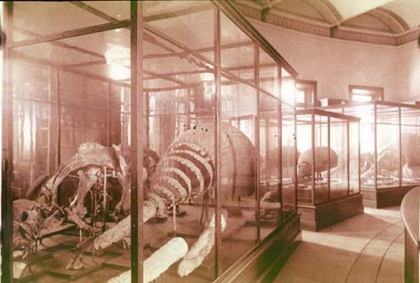

|
|  |
|
Francisco P. Moreno, Museo de La Plata: Gliptodontes
|
Unlike its predecessor in the capital, ironically still the 'National Museum' under Karl Hermann Burmeister, Moreno´s institution had managed to establish itself as a 'centre of calculation' not merely on account of its more comprehensive and aggressive patterns of collecting (of dubious scientific value, according to Moreno´s critic Ameghino, because variety had been sacrificed for size and quantity), but also of the director´s successful self-promotion both in the international scientific circuits and in local political and social networks –his capacity for constructing alliances in and outside science. The La Plata Museum was also the first of its kind in Latin America to maintain its own laboratories and workshops of carpentry, photography, and a printing press: a self-sufficient machinery of exhibit-production that even went to the extent of 'importing' indigenous captives of the 'Desert Campaign' of 1879 to produce textiles and other artesanry (and, eventually, bodies to dissect and display, when soon afterwards they started to die of exhaustion and contagious diseases).
|